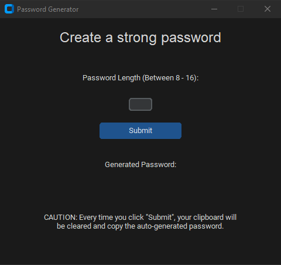
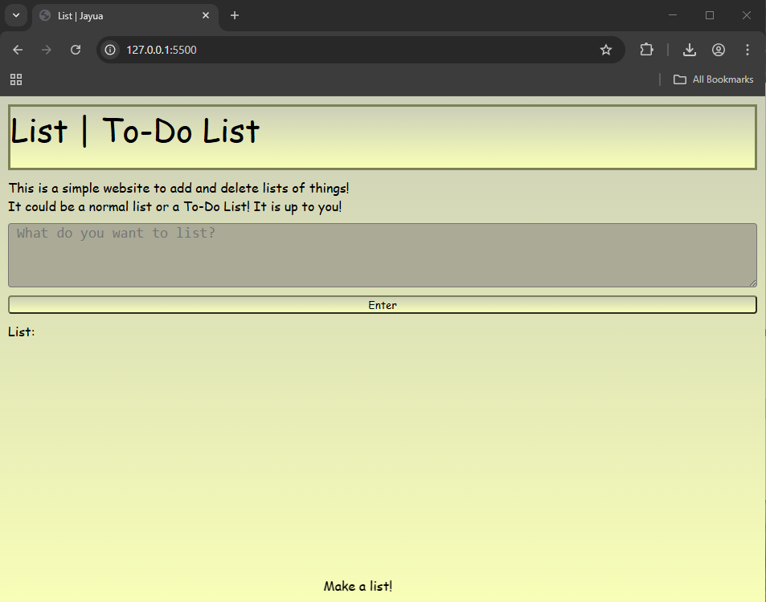
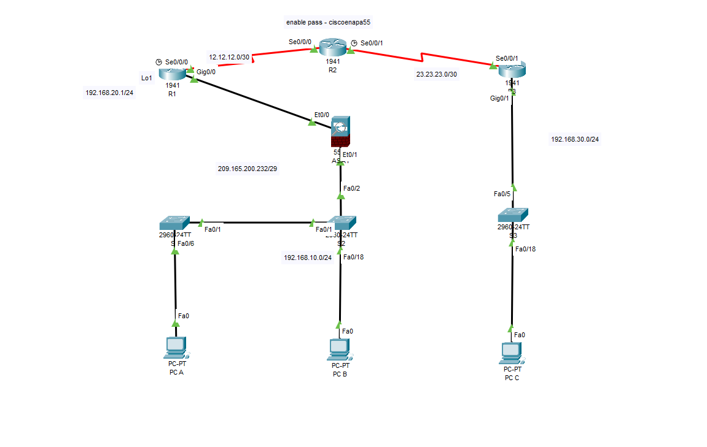

Uldrick
Home
Professional
Resume
Projects
Contact
Projects
Projects
Here are some of the projects that I have built. More will be built in the future:
Password Generator |Python/CustomTkinter|

Built with Python using PyCharm. Users are to enter a number between 8-16 to generate a randomly generated password. Every "Sumbit" will automatically be copied to the users' clipboard, ready to be pasted.
I made this project to get more practice and get better password to use for my accounts. Sometimes it is troublesome to think of a complex password.
Download
List/To-Do List Web |HTML|CSS|JSS|

A simple list | to-do list website. Users can enter as many tasks or things as they want. They are also able to edit or delete tasks/things if they wish to do so.
I made this project with the help of multiple research on how to create web applications and a good starting place on how to improve in HTML, CSS, and especially JS.
Live Demo
University Assessment |Cisco_Packet_Tracer|

University students at RMIT were required to configure multiple devices such as routers, switches, and a firewall. The end goal was to create a secure network security perimeter.
This is not exactly a project, but included to showcase myself and my understanding of basic fundamental knowledge about cybersecurity, networking, and other fundemental skills in the IT field.
Download